从操场到课堂 —— 一份 13 页的专业认知演示文稿，以及生成它所用的 SKILL.md 源码对照预览工具。
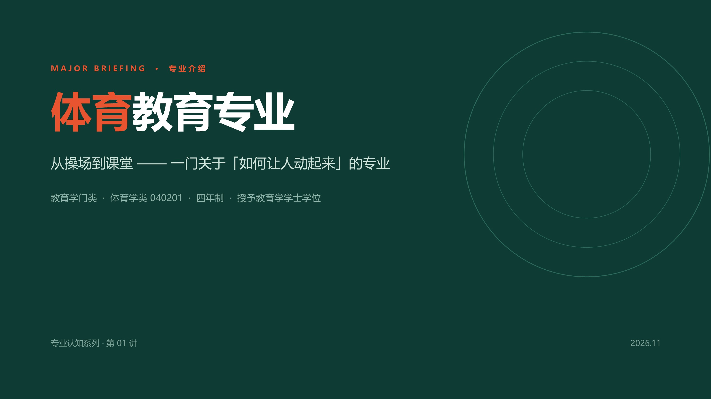
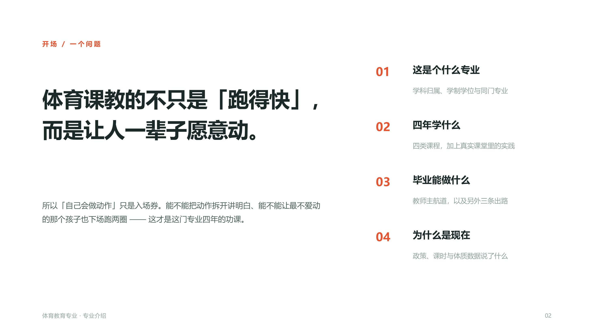
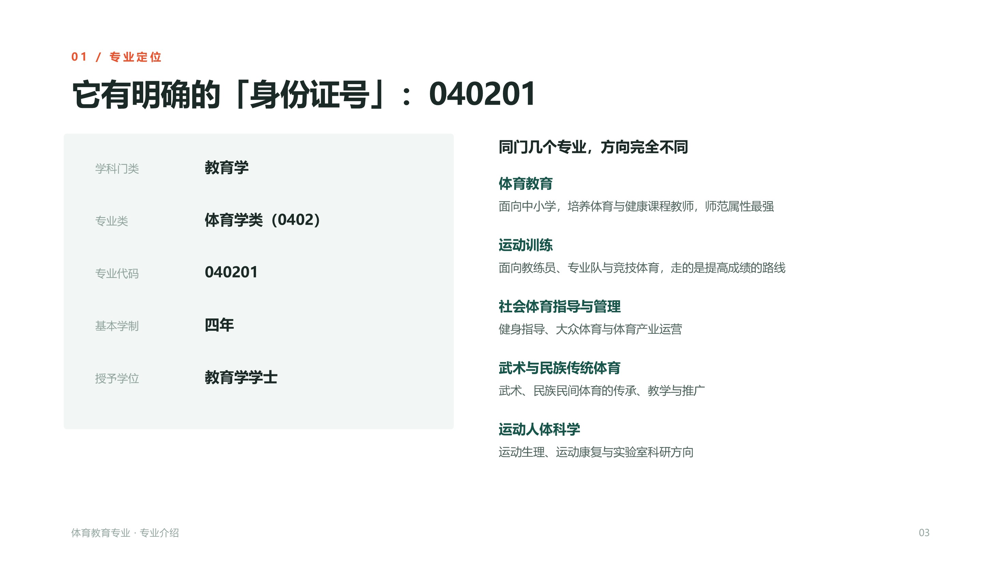
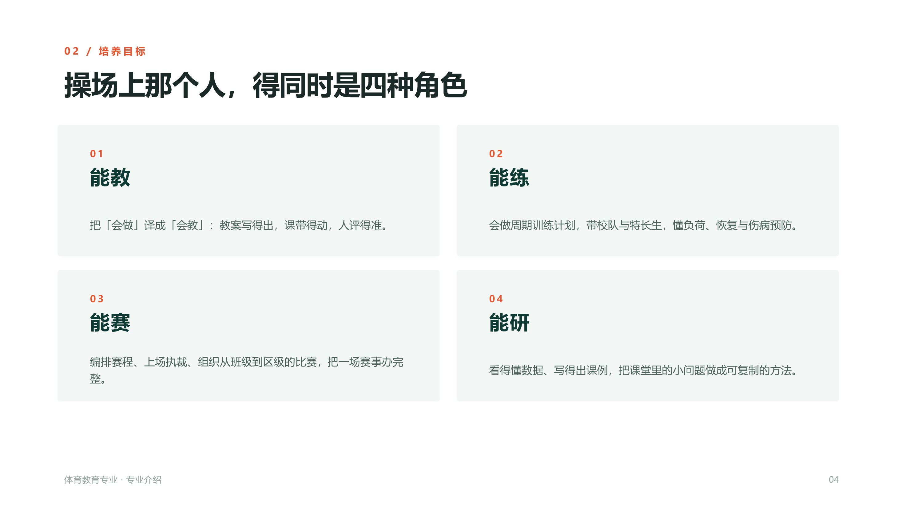
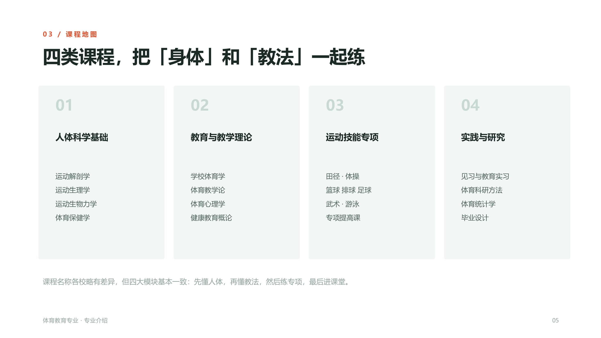
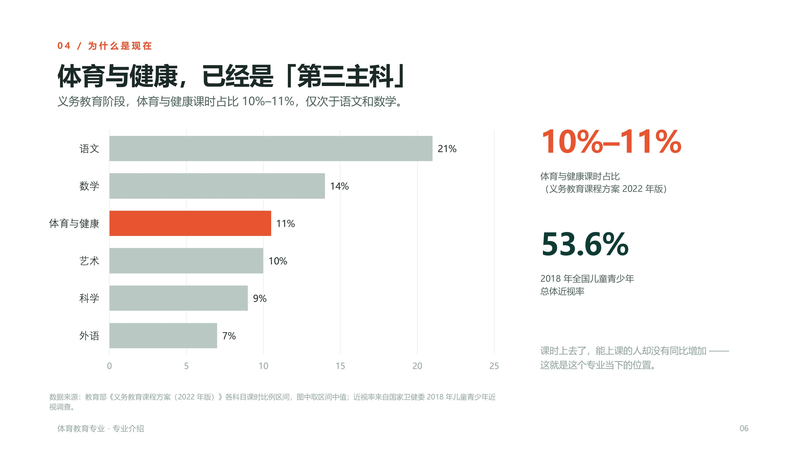
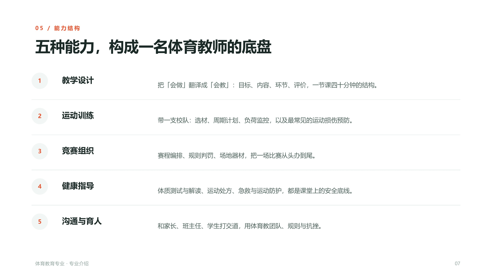
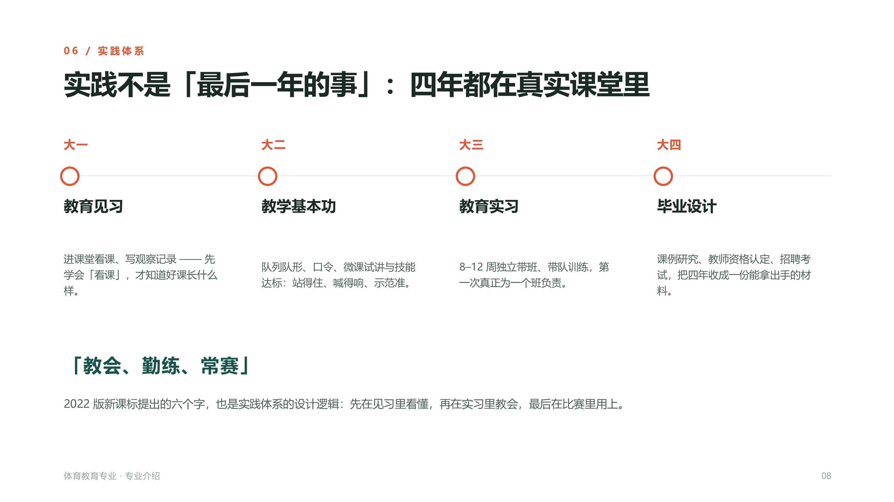
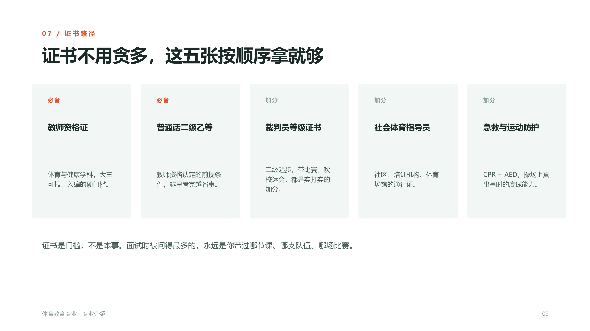
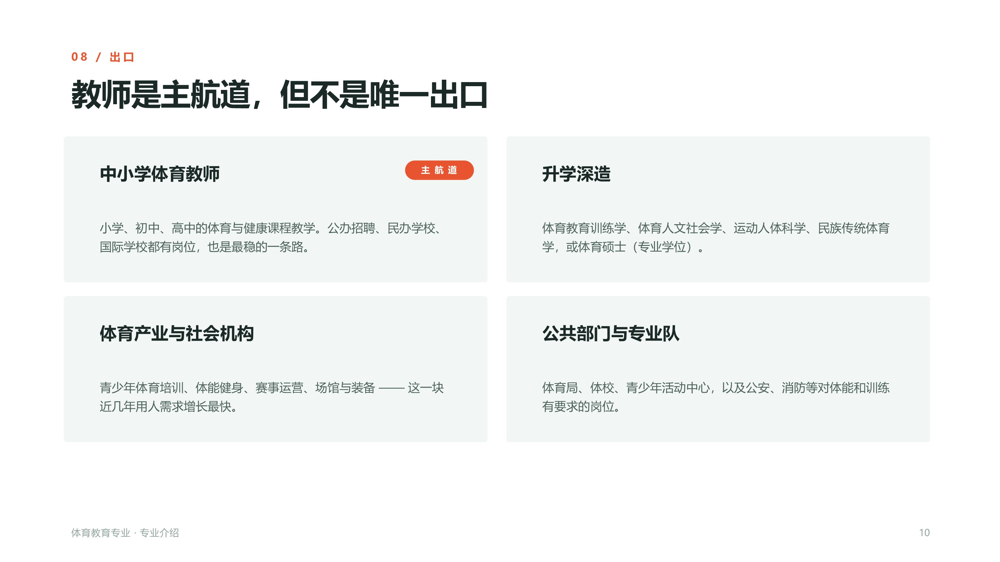
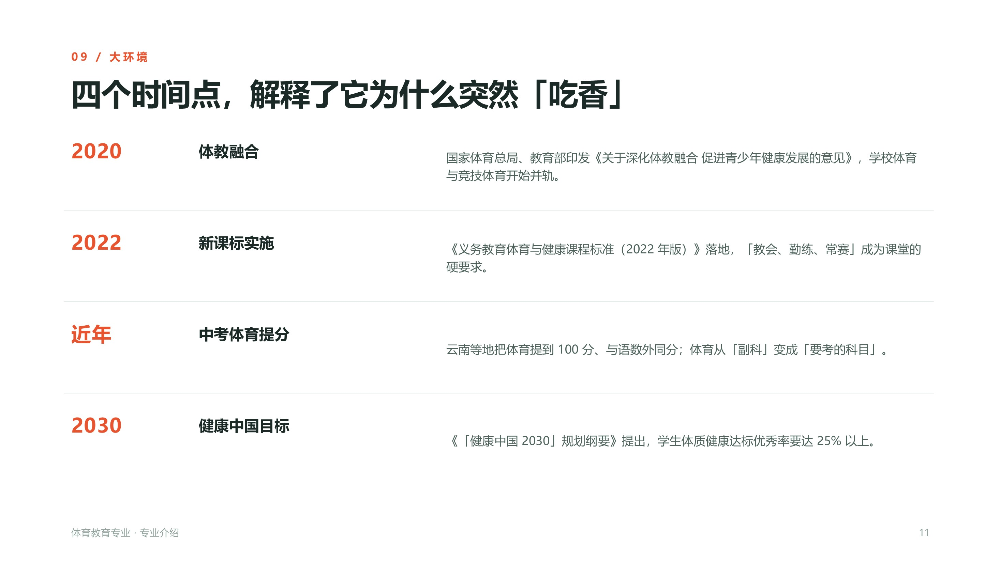
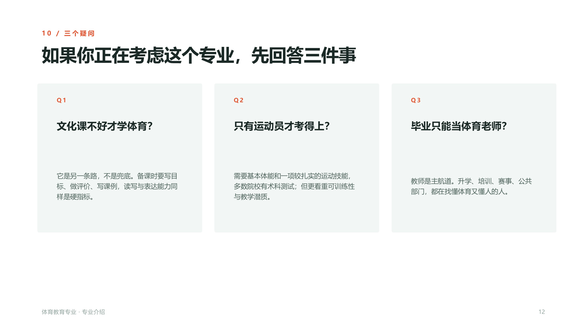
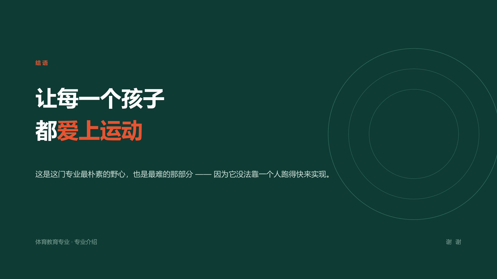
演示文稿由 pptx Skill 驱动生成。为了方便理解一个 Skill 的组织方式，我同时做了一个左右分栏的源码对照预览工具：左栏是高亮后的 SKILL.md 原文，右栏是渲染效果，可以拖动中间分隔条实时调整比例。
深墨绿底 + 朱橙高亮 + 白字，只用三种颜色。橙色只出现在关键词、数字和强调线上，形成稳定的视觉节奏。
不是把专业信息堆成清单，而是用"一个问题"开场，按「是什么 → 学什么 → 能做什么 → 为什么是现在」推进。
课时占比 10%–11%、近视率 53.6% 等硬数据单独成页，并标注来源，让"为什么选这个专业"有据可依。
13 页里每页都有一个清晰的单一论点，标题即结论，正文只做支撑，避免信息过载。
以前做演示文稿，习惯先打开软件、再想怎么排版，最后才补内容——顺序是反的。
这次先读 SKILL.md，把「内容结构、设计规范、常见错误」这些约束前置，再让工具按规范生成初稿，最后人工调整。结果是排版风格从头到尾一致，不用一页页去对齐字号和颜色。
更大的收获是理解了 Skill 的本质：它不是一段代码，而是一份把"怎么做才对"写清楚的说明书。把经验沉淀成规范，比把经验留在脑子里更有价值。